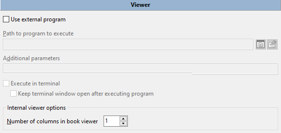
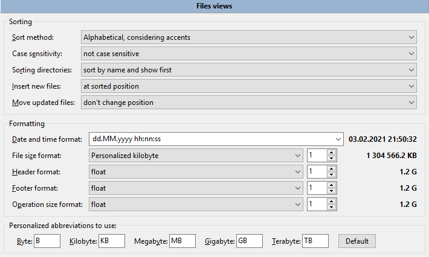
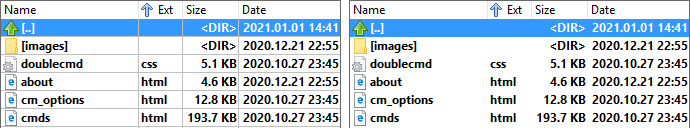
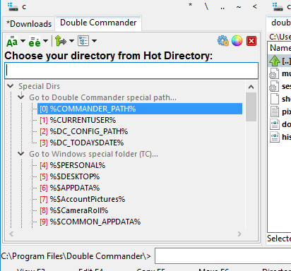

Double Commander keeps its configuration settings in files. You may configure the location of these configuration file from the configuration options.
The main files are:
doublecmd.xml – all the main program settings;
extassoc.xml – file extension association configuration;
pixmaps.txt – maps file extensions to MIME-types icon names;
multiarc.ini – external archivers;
shortcuts.scf – keyboard layout settings;
highlighters.xml – editor color settings;
history.xml – command line and directory history, search and replace, etc.;
few others... – etc...
We normally don't have to play directly into these files. As we work with the application and configuring it in the options, the information will be write into them. Then, on the next session, their values will be restored.
The "Options" window allows to set almost all of the options in Double Commander, but there are several parameters that can only be changed manually in the doublecmd.xml configuration file.
Double Commander has several internal commands to open the configuration dialog and quickly jump to the desired section.
Double Commander supports importing/exporting some settings: directory hotlist, favorite tabs, external archivers, toolbar (main and middle), tooltips. Also, the list of hotkeys can be saved to a new file and you can switch between them.
Note: To the right of the file or directory choose buttons is the button Some functions to select appropriate path  : the popup menu contains lists of variables (including environment variables) and some additional functions, see description here.
: the popup menu contains lists of variables (including environment variables) and some additional functions, see description here.
These are the various translations available for Double Commander. You can choose your preferred language.
There are 4 checkboxes and 1 list that affect certain behaviors of DC.
Allow only one copy of DC at a time – If enabled, only one copy of the program can be run. If you try to run a second copy of Double Commander, the first copy will be activated.
Move icon to system tray when minimized – When minimized Double Commander will display its icon in the system tray (notification area) rather than the panel (or Windows taskbar).
Always show tray icon – If enabled, in addition to the Double Commander window button on the panel (or Windows taskbar), it will additionally show the tray icon.
Drives blacklist – use this to hide certain drives in the drives panel menu bar. Each item must contain the full path to the drive/mount point. Separate multiple drives with semicolons ";" without spaces. Examples: /media/cdrom;/mnt/win_c (Linux) or a:\;b:\;d:\ (Windows). Also in Unix/Linux you may use wildcard mask, example for AppImage files: /tmp/.mount_*. Hidden drives will still be available, for example, you can open them from the Directory Hotlist menu or change the path manually.
Automatically hide unmounted devices – An unmounted device will be automatically removed from the drive button bar and from the drives list.
This section contains the settings of the built-in Double Commander tools (editor (F4), viewer (F3) and file comparison tool) and commands for launching the terminal.
You can specify external programs for edit, view and find differences. These external programs will be used instead of the internal tools.
Almost all parameters and switches are available in the window of built-in viewer, there are only two groups of parameters in this section.

The first group allows you to specify an external program for viewing files. Double Commander will automatically add the full filename as the last launch parameter each time the viewer is called.
Additionally: Execute in terminal and Keep terminal window open after executing program can be useful if you are using a console program and/or if the program's terminal output is important (or just temporarily for debugging).
The next group of parameters, Viewer Book Mode, is associated with a special text viewing mode: you can set the font color, background color and the number of columns of text (like a book spread or a newspaper).
There are also several parameters available that can only be changed manually in the doublecmd.xml configuration file.

The first group of parameters allows you to specify an external program for editing text files. Double Commander will automatically add the full filename as the last launch parameter each time the editor is called.
Additionally: Execute in terminal and Keep terminal window open after executing program can be useful if you are using a console program and/or if the program's terminal output is important (or just temporarily for debugging).
Internal editor options:
Auto Indent – Allows to indent the caret, when new line is created with Enter, with the same amount of leading white space as the preceding line.
Delete trailing spaces – Auto delete trailing spaces, this applies only to edited lines.
Caret past end of line – Allows caret to go into empty space beyond end-of-line position.
Show special characters – Shows special characters for spaces and tabulations.
Use spaces instead tab characters – Converts tab characters to a specified number of space characters (when entering).
Tab indents blocks – If enabled, Tab and Shift+Tab act as block indent, unindent when text is selected.
Smart Tabs – When the Tab key is used, caret will go to the next non-space character of the previous line.
Tab width – The width of the tab character (in number of characters). If Use spaces instead tab characters is enabled, then the Tab key will insert the specified number of space characters. This setting does not apply if the Smart Tabs option is enable.
Right margin – Line length marker, thin vertical line at the given position: lines will not be truncated with a forced line break, it is just a visual hint. Useful in cases where there is a recommendation to limit the length of strings (for example, 80 or 120 characters).
2.3.2.1. Tools > Editor > Highlighters
The SynEdit component is used for the built-in editor, some settings of syntax highlighting rules that are part of SynEdit are available in this section.

At the top of the window there is a drop-down menu with file types (plain text, programming and markup languages) and a field for the list of file extensions. Buttons:
Save – will save the changes in the list of file extensions.
Reset – will reset the list to the default value.
In the left part of the window there is a list of available elements for the selected file type, in the right part there is a preview area.
You can change the text and background colors and font style (underline, bold, italic and strike out) used for keywords, strings, numbers, operators, and so on. For the default text, only the text and background colors are available.
Text-mark is used to add a border around the element: you can choose the color, the type of border and the type of line.
Use (and edit) global scheme settings and Use local scheme settings are for default text only: you can change the colors for all file types at once, or only for some.
All settings are saved in the highlighters.xml file.
Note: Possible ways to change (fix or improve) parsing of files (syntactic analysis), keyword lists, and so on:
In addition, Double Commander also uses the SynUniHighlighter component for syntax highlighting, see the FAQ for details.
Almost all parameters and switches are available in the window of built-in differ, there are only two groups of parameters in this section.

The first group allows you to specify an external file comparison program. Double Commander will automatically add the full filenames as the last launch parameters each time the differ tool is called.
Additionally: Execute in terminal and Keep terminal window open after executing program can be useful if you are using a console program and/or if the program's terminal output is important (or just temporarily for debugging).
Position of frame panel after the comparison – defines the order in which the filenames are passed to the comparison program (built-in or external):
Active frame panel on left, inactive on right – The file from the active file panel will be opened in the left panel of the comparison program, the second file will be opened in the right panel.
Left frame panel on left, right on right – The file from the left file panel will be opened in the left panel of the comparison program, the second file will be opened in the right panel.
If two files are selected in the active panel, the first file will be opened in the left panel of the comparison program.
This section contains terminal launch parameters:
The first two items are for running commands in the terminal: to indicate the position of commands to run on the command line, use {command} in the parameters field.
Default values:
Windows: cmd.exe
macOS: /Applications/Utilities/Terminal.app
Linux and other Unix-like systems:
For Debian and Debian-based distributions (antiX, Devuan, Ubuntu, Linux Mint and others), x-terminal-emulator will be used: this is a symbolic link to the terminal used in these systems by default.
Otherwise, Double Commander will try to get the value from the settings of the desktop environment: Cinnamon, GNOME, KDE, LXDE, LXQt, MATE or Xfce.
If automatic detection failed, Double Commander will use xterm.
You can select fonts for the editor (F4), viewer (F3), file panels (Main Font) and other elements of the Double Commander interface, and also their size. The bottom line for each allows you to see how the display of the selected font looks. One important note: the fonts for the editor and viewer must be MONOSPACE. The figure below illustrates a proportionally spaced font in the window above (notice the strange spacing) and a monospace font in the window below which appears correctly spaced. Also, with some proportional fonts the characters may overwrite each other and look quite strange.

Normal (proportional) font above, monospaced below.
This section contains settings for the appearance of file panels:

The color settings here are global settings for both file panels. These settings can be overridden by creating a customised column style which can have its own color settings, and more, for each tab in the panel! See Files views > Columns > Custom columns for details on how to do this. You must adjust the current style of the columns (Default by default) or create your own style and apply it for any tab.
Here you can choose colors that will be used to process the file panels: Text Color, Background, Background 2, Mark Color, Cursor Color, Cursor Text, Inactive Cursor Color, Inactive Mark Color, and also Cursor border (if you are not using a frame cursor). With the two background options you can make an alternating stripe in the panels, as in some screenshots.
Use Inverted Selection – inverts colors of marked text and marked text under cursor.
Use Inactive Sel Color – enables the display of the cursor also in the inactive panel.
Use Frame Cursor – Double Commander will use a frame instead of a solid rectangle.
Allow Overcolor enables the ability to use a color other than the default color for file names (see section Colors > File types).
Also here you can decrease the brightness of the inactive panel and change the colors of the drive free space indicator.
There is a preview area at the bottom of the window, so you can see all the changes at once.
The Reset to DC default button will reset all parameters to their default values.
Here you can specify file types that should be given a different color. The Allow Overcolor parameter must be enabled (enabled by default).
In line Category name you may write a description of the file, what it does or what program it opens.
In line Category mask put a wildcard mask to match file types (symbol "*" means match any number of characters, symbol "?" means any one character). You may put multiple file types here using a semicolon ";" without spaces between them. Also you can use search templates ( ), including search with content plugins.
), including search with content plugins.
In line Category attributes you can put file attributes, and DC will match any files which have matching attributes (not available if using a search template). File attributes are specified by the following templates:
Windows: [d or l]rahs[c or e]tp
Linux: [b, c, d, f, l, r or s]rwxrwxrwx
See the description of this values here. If attribute should not be set, it must be replaced with the "-" symbol, unnecessary attributes should be hidden: symbol "*" means match any number of characters, symbol "?" means any one character. For example, ?r* (Windows) or ?r-* (Linux) will find all read-only files and folders.
You can use a color from the list or specify yours using the ">>" button.
Do not forget to click "Apply" button after customization.
Rules are applied strictly in reverse order: a rule higher in the list will overlap any rule below.
Here you can set the action on pressing some keys in the active file panel: Letters, Alt+Letters, Ctrl+Alt+Letters. You can choose one of the following actions: do nothing, set focus to command line and enter command, run quick search or quick filter.
Left, Right arrows change directory (Lynx-like movement) – right arrow opens directory or runs a program under cursor, left arrow opens parent directory.
In this section you can set keys to launch commands and also specify parameters for these commands.

Shortcut files – A drop-down menu containing a list of files with a set of hotkeys. They are stored in the directory with program settings files.
On the right is the file related menu button:
Actions with the current file: Save now, Rename, Copy and Delete.
Restore DC default.
Commands for switching to the previous and next categories.
Commands for switching the sort order of the command table (see below).
Categories – shows the category of hot key combinations: Main, Copy/Move Dialog, Differ, Edit Comment Dialog, Editor, Find files, Multi-Rename Tool, Synchronize Directories, Viewer.
Filter – enables you to search the internal commands more quickly.
Sort order – switchs the sort order of the command table:
By command name.
By shortcut key (grouped) – If multiple hotkeys are assigned, they will be listed separated by semicolon ";".
By shortcut key (one per row).
Commands – list of available internal commands in Double Commander. The list is shown as a table with three columns:
Command (name of internal command).
Hotkeys (assigned shortcuts).
Description (a short description).
The table at the bottom of the window shows assigned keyboard shortcuts, parameters, and interface elements (see below) for the selected command.
Add hotkey – will open a window for adding hotkeys.
Edit hotkey – will open the same window, but with the hotkey and other options already set.
Delete hotkey – will delete the hotkey selected in the list.
A window for adding hotkeys:
Shortcuts – new shortcut displays here. Click in the box and press combination on keyboard to enter new hot key. If the new combination is already being used for another command, Double Commander will show a warning.
Parameters (each in a separate line): – allows to set some parameters for the command. Most parameters must be added as parameter=value (unless otherwise stated), without quotes and each in a separate line.
Only for these controls – The hotkey will only work if the selected interface element(s) has focus: command line, files or quick search panel.
The following buttons are located on the right side of the window:
The F1 button will show a menu with a list of free availabl keyboard shortcuts, grouped by alphabet and modifiers.
The "+" button will add another field for the keyboard shortcut (up to five).
The "-" button will delete last shortcut from list.
You can set multiple hotkeys for an internal command in two ways: use the Add hotkey and "+" buttons or the Add hotkey button several times. The second way allows to use the selected command with different parameters.
Selection by mouse, Mode – ability to select and unselect files and folders with the mouse. Mode is set for Left button or Right button (a long press will call the context menu for files and folders).
By clicking on icon – allows to select files with one mouse click on the icon. Selection by clicking on icon in thumbnail view works when you click on left part (25%) of image, so you can set cursor without selection by mouse clicking on right image part.
Scrolling – ability to use mouse wheel to list files at panels.
Line by line with cursor movement – cursor will move up or down the panel before scrolling takes place.
Line by line – the cursor remains on the file and scrolling takes place immediately. Also you can specify the number of lines.
Page by page – the same as previous, but scrolling is by pages rather than by lines (much faster scrolling).
Open with – will determine what will launch the action when you are using the mouse button on an element from the displayed file list in a panel:
A double click is necessary to launch the action (default).
A single click opens files and folders.
A single click only opens folders. For files, a double click is needed.
The text cursor no longer follows the mouse cursor – is used for the last two values. If single click is enabled, by default the text cursor will follow the mouse cursor: this helps to avoid accidentally opening files or folders. You can disable it if you don't need it (or don't like it).
Double Commander supports the ability to drag and drop files using the mouse (that is, with the left mouse button pressed) to the windows of external applications (for example, a text or graphics editor or viewer), to the toolbar and copying/moving files between directories. If the action is possible, the "+" symbol will be displayed near the mouse cursor.
When dragging a file to an empty place on the toolbar, a button with an external command will be created, the passed file will be used as a command. Dragging a file to a button is only possible if it is a button with an external command: the command will launched and the file will be passed to it as a launch parameter.
For file copy or move (if the Shift key was held) operations, the following targets are possible: any folder in the active panel directory (the folder name will be highlighted with a frame), the opposite file panel or the directory of any open tab (just drop the files on the header of the desired tab). Use ".." to copy files to the parent directory. Double Commander can also copy files to an archive if adding files is supported.
Dragging using the right mouse button will show the menu with the following actions: Copy, Move, Create link, Create symlink and Cancel.
Show confirmation dialog after drop – helps to avoid accidental errors when using drag and drop files inside the active file panel or between panels: Double Commander will show a confirmation dialog as for normal copying or moving files.
The next feature is available in Windows only: you can drag and drop text selected in a web browser or word processor (for example, LibreOffice Writer or Microsoft Word) to the panel and save it. Here you can choose file format (RTF, HTML or plain text file), encoding and enable automatic name generation.
In this section, you can set various file sorting options and date/time and size formats.

Sort method – sets the sorting method in the file panels:
Alphabetical, considering accents – This method will sort alphabetically, taking into account the peculiarities of the system language and regional settings: also additional characters will be taken into account (for example, umlaut and other diacritical characters in Germanic languages or the letter "ё" in Russian).
Alphabetical with special characters sort – Like the previous method, but additionally the list will be sorted by special characters and punctuation marks before letters.
Natural sorting: alphabetical and numbers – This method will sort digits as numbers: for example, "3" will be show before "20" because 20 is larger than 3.
Natural with special characters sort – Like the previous method, but also with sorting by special characters and punctuation marks.
Case sensitivity – complements the selected method:
not case sensitive;
according to locale settings (aAbBcC);
first upper then lower case (ABCabc).
Sorting directories – sets the position of directories in the file list:
sort by name and show first;
sort like files and show first;
sort like files.
Insert new files – sets the position of the new file in the list:
at the top of the file list;
after directories (if directories are sorted before files);
at sorted position;
at the bottom of the file list.
Move updated files – sets the position if the file property currently used for sorting was changed (modification date, size, etc.):
don't change position;
use the same setting as for new files;
to sorted position.
The first parameter in the Formatting group is Date and time format. You can choose one of the existing templates from the drop down list or set your own using date and time formatting characters.
Formatting characters are presented below (based on Free Pascal documentation). Some values depends on your regional settings!
As example we will use 2021.01.24 09:06:02 (i.e. yyyy.mm.dd hh:mm:ss) and the USA region.
| Possible characters | ||
|---|---|---|
| Characters | Description | Example |
c | short date format and long time format if the time is not zero | 1/24/2021 9:06:02 |
f | same as c, but adds the time even if it is zero | 1/24/2021 9:06:02 |
d | day of month | 24 |
dd | day of month (leading zero) | 24 |
ddd | day of week (abbreviation) | Sun |
dddd | day of week (full) | Sunday |
ddddd | short date format | 1/24/2021 |
dddddd | long date format | Sunday, January 24, 2021 |
m | month or minutes if preceded by h or hh specifiers | 1 |
mm | month or minutes if preceded by h or hh specifiers, with leading zero | 01 |
mmm | month (abbreviation) | Jun |
mmmm | month (full) | January |
yy | year (two digits) | 21 |
yyyy | year (with century) | 2021 |
h | hour | 9 |
hh | hour (leading zero) | 09 |
n | minute | 6 |
nn | minute (leading zero) | 06 |
s | second | 2 |
ss | second (leading zero) | 02 |
t | short time format | 9:06 |
tt | long time format | 9:06:02 |
am/pm | use 12 hour clock and display am and pm accordingly (also AM/PM, a/m or A/M); for example, t AM/PM | 9:06 am |
/ | insert date separator | / |
: | insert time separator | : |
"text" | literal text; for example, yyyy "AD" | 2021 AD |
The next parameters sets the file size format:
File size format – will be used in the file panels.
Header format – will be used in the drives list and free space label.
Footer format – will be used in the status bar of the file panels.
Operation size format – will be used in the file operations dialogs: copying, moving, calculating checksums and so on.
Also on the right you can set the number of digits after the decimal separator (i.e. separator for integer and fractional parts of a number): 0, 1, 2 or 3.
File size units: bytes, kilobytes, megabytes, gigabytes, terabytes or float (Double Commander will choose the unit automatically based on the size).
"Personalized" in the name means that Double Commander will use Personalized abbreviations from the list below. The Default button will reset their to the default values for the selected language (specified in the corresponding language file).
2.8.1. Files views > Files views extra
Marking/Unmarking entries:
Windows style filter when marking files ("*.*" also select files without extension, etc.) – By default, the mask "*.*" matches the name of any file that has an extension, for any file names use the mask "*". If enabled, the mask "*.*" will match any file.
Default attribute mask value to use – will be used for the following commands:
Select All (cm_MarkMarkAll),
Unselect All (cm_MarkUnmarkAll),
Invert Selection (cm_MarkInvert),
Select a Group (cm_MarkPlus)
and Unselect a Group (cm_MarkMinus).
For example, if you want these commands to work only with files, specify d-.
The Add button will open the file attributes selection window, you can use it or enter them manually. For more information about file attributes and their use, see here.
Use an independent attribute filter in mask input dialog each time – If enabled, the attribute filter will be added to the Select a Group (cm_MarkPlus) and Unselect a Group (cm_MarkMinus) command dialogs.
When selecting files with <SPACEBAR>, move down to next file (as with <INSERT>) – moves the cursor down on selection with SPACEBAR. Default keys are Shift+Down or Shift+Up.
Show square brackets around directories – helps to visually distinguish directories from files when icons are disabled. Also you can use any symbols instead them, see description of <FolderPrefix> and <FolderPostfix> parameters here.
Show system and hidden files – If enabled, Double Commander will show files and folders which have the "hidden" or "system" attribute (Windows) or the name with a dot character in the beginning (Linux and other Unix-like systems). This can also can be changed from the main menu.
The parameters Load file list in separate thread and Load icons after file list are designed to speed up the display of the list of files in the panel, i.e.the application window will hang less when opening large directories.
Don't load file list until a tab is activated – When launched, Double Commander will not load the list of files of inactive tabs that were opened in the previous session.
Highlight new and updated files – If enabled, the names of files that are currently being created or modified will flash.
Enable inplace renaming when clicking twice on a name – is an additional ability to rename the file using the left mouse click (it does not depend on the the chosen key for selection with the mouse), as in Windows Explorer. The A double click is necessary to launch the action option must be selected in the mouse settings section.
Enable changing to parent folder when double-clicking on empty part of file view – is an additional feature to simplify directory navigation. But not applicable if you are using a columns set and the list of files in the current directory does not fit in the panel (i.e. you see a vertical scroll bar).
There are only two parameters here.
Show file extensions: directly after filename or aligned (with Tab). In the second case, file extensions will be shown separately, aligned to the right side of the columns.
Columns size: Double Commander will set the size automatically (the size will depend on the length of the filenames) or you can set the width of the columns (in pixels) or their count.
First group is Show grid:
Vertical lines – enables vertical grid lines in the panels.
Horizontal lines – enables horizontal grid lines in the panels.
The screenshots below illustrate this subtle grid effect. The screenshot on the left has the vertical and horizontal lines enabled and the screenshot on the right does not.

Auto fill columns – If enabled, when resizing the window (or if free space exists), Double Commander will resize the column, which selected in the next option Auto size column: (first or last). The horizontal scrollbar will not be available.
If the content of the column is larger than its width:
Cut text to column width – Sometimes column text can overlap into other columns. This option truncates any extra text at the column boundary.
Extend cell width if text is not fitting into column – If the text does not fit and the adjacent cell is empty, then the text will also occupy the adjacent cell.
2.8.3.1. Files views > Columns > Custom columns
In this section you can customize the panel appearance, columns, colors, fonts, etc. Double Commander is very configurable in this way.

There is a preview area at the bottom of the window, so you can see all the changes at once. You may move cursor and select files to get immediately an actual look and feel of the various settings.
File system – allows to switch to columns settings for WFX plugins (if installed plugins support it).
Columns view – a list of existing column styles. There is one default style Default.
Save – saves changes in the selected set of columns.
Save as – allows to save the selected column set (as is or with changes) with a new name.
New – creates a new column set based on the selected one. With the same name + current date and time.
Rename – will prompt to enter a new name.
Delete – deletes selected columns set.
Below is a table with columns of the selected set, here you can set the number, name, content, place and size of columns. The count of lines in the table is equal to the count of columns in the set. Adding a new column: use the down arrow key or right-click in the empty area near the table and select Add column.
These are the parameters that determine the table for the column (click in the boxes to edit them):

Column – shows the indicator of the selected column.
Caption – specifies the name of the column which will be displayed in the tabstop headers bar. You can set any name you like.
Width – column width (in pixels) which will be set on program start. Note: the width depends on the column content, e.g. the file extension column will have a small width.
Align – sets the alignment of the content of the column. Variants are:
"<-" – align left;
"->" – align right;
"=" – align middle.
Field contents – sets the basic content of the column. You can select internal fields of Double Commander (submenu "DC") or fields of installed WDX plugins (submenu "Plugins"). List of internal fields:
GETFILENAME – file name and extension (text.txt).
GETFILENAMENOEXT – file name and no extension (text).
GETFILEEXT – file extension (from the dot to the end, e.g. txt).
GETFILESIZE – file or directory size. By default, the appearance will depend on the option chosen in the Files views section, but all possible size formats are also available.
GETFILETIME – file or directory modification date. The appearance will depend on the option chosen in the Files views section.
GETFILECREATIONTIME – file or directory creation date (does not work in Linux/BSD, POSIX limitation).
GETFILELASTACCESSTIME – file or directory last access date.
GETFILECHANGETIME – file or directory status change date.
GETFILEATTR – file or directory attributes. In Linux it is possible to choose a numeric (octal) value.
GETFILEPATH – path to the current item. Uses: usually, for search results.
GETFILEGROUP – displays the group of the file.
GETFILEOWNER – displays the owner of the file.
GETFILELINKTO – displays the path and file, that is, what is linked with this symlink.
GETFILETYPE – file type (as in Windows Explorer or MIME-type).
GETFILECOMMENT – file or directory description (comment) from descript.ion.
GETFILECOMPRESSEDSIZE – compressed file size (real size if using NTFS compression).
Move – allows to move lines (which equates to reordering the columns). Click twice in the Move box and you will see a type of spinner appear, clicking on the upper part moves the line up (column moves left).
Delete – allows to remove any line. To delete: click in the Delete box of the line. Then click again, this time a delete symbol appears. If you click a third time the line will be deleted from the table.
Next, you can change the appearance of the file panels.
Go to set default – opens the section Colors > File panels.
Use custom font and color for this view – allows to change the appearance of file panels only for this set of columns (and separately for each column, if needed). You can override the font for the file panels and the global settings from Colors > File panels:

Note: Cursor border and Use Frame Cursor can be applied only for the whole set.
Previous, Next – switches columns.
Customize column – shows the name of the custom column.
>> – button for choosing any color from the palette.
R – restores default value.
All – applies the modification to all the other columns.
Plugins are extensions that enhance the functionality of Double Commander.
In the beginning, a few general settings.
When adding a new plugin, automatically go in tweak window – See the description of the Tweak button below.
Plugin filename style when adding a new plugin – Here you can choose how the path will be set when adding plugins:
With complete absolute path.
Path relative to %COMMANDER_PATH%.
Relative to the specified path.
Also you can apply the chosen way to the already added plugins.
Lua library file to use – the full name of the Lua library, or only the file name if the file is located in the program directory or system directories for libraries. This path may be relative to the Double Commander executable file. (Lua scripts can be used for automation and as content plugins, see more details here.)
There are several types of plugins:
1. Packer plugins (WCX)
Packer plugins are used to unpack specific types of files, usually archive formats. Some plugins also support creating new archives and modifying existing archives.
There are plugins that allow to save a list of selected files or use batch processing: creating links,converting files, copying with specific conditions, etc.
Order matters: when choosing an appropriate plugin, Double Commander starts checking by extension from top to bottom. Use the By extension/By plugin button to switch list view and drag and drop.
2. Content plugins (WDX)
Content plugins are designed to get properties of a file or information about its content (for example, EXIF or ID3 tags). You can use this data in the file search or multi-rename tool, column set, tooltips.
Also Double Commander supports content plugins written in the Lua language (scripts are added in the same way as ordinary plugins). Examples can be found in the program folder (plugins/wdx/scripts).
3. File system plugins (WFX)
File system plugins uses their own file systems or provides access to other file systems and devices (local or remote). For example, FTP servers, Samba,mobile devises. Also it can be lists of files, running processes and services, or the Windows registry.
4. Lister plugins (WLX)
The built-in viewer displays plain text files, some image formats and console commands output, plugins allow to expand this list: electronic documents and databases, audio and video files, font files, content of archives, detailed information about some files, source code files with syntax highlighting.
Order matters: when choosing an appropriate plugin, Double Commander starts checking from top to bottom.
5. Search plugin (DSX)
Search plugins are Double Commander's own plugin type, these plugins use console programs to find files (for example, Locate, Everything or Recoll). The DSX plugins interface allows to send them search parameter values from the "Standard" and "Advanced" tabs.
Buttons:
Add – opens the file selection dialog. Alternatively, you can use the internal cm_AddPlugin command.
Disable – allows to temporarily disable the selected plugin.
Remove – removes the selected plugin from the list (but not plugin file!).
Tweak – the action depends on the type of plugin:
- WCX: change plugin path, set file extensions and supported functions;
- WDX and WLX: change plugin path, display name or detect string;
- WFX: change plugin path or display name.
Configure – opens the plugin's own settings window (if selected plugin supports this feature).

You can change the layout of the main window here. I suppose, all the available options are explained on the screenshot above (Layout). The screenshot below illustrates what DC looks like with all the layout options unselected.

2.10.1. Layout > Drives list button
In this section you can choose which additional information Double Commander will show in the drives list menu: drive label, file system and free space.
2.10.2. Layout > Tree View Menu
In this section you can enable the Tree View Menu and choose where it will be used.
The Tree View Menu is a way to display some of the Double Commander menus as a tree in a separate window: Directory Hotlist, Favorite Tabs, directory and command line history. This way of presenting content and a filter will help you quickly select the desired menu item.

Using the parameters of the corresponding internal commands, you can set the position of the Tree View Menu:
menu will be shown from the top left corner of active panel;
menu will be shown at the current mouse cursor position.
Parameters can be specified in the hotkey settings or add a button on the toolbar.
Also Double Commander can display main menu and toolbar as a tree (always in the center of its window), see the description of commands cm_ShowMainMenu and cm_ShowButtonMenu.
2.10.3. Layout > Tree View Menu Colors
Here you can customize the appearance of the menu to your preference, a preview will show all changes before saving.
2.11. Toolbar and Toolbar > Toolbar Middle
See the dedicated Toolbar help page about how to use and configure it.
2.11.2. Toolbar > Toolbar Extra
In this section you can choose how the path will be set when adding icons, commands and starting paths:
With complete absolute path.
Path relative to %COMMANDER_PATH%.
Relative to the specified path.
Also you can apply the chosen way to the already added paths.
This section contains settings related to file manipulation.
Show operations progress initially in – sets the initial display way and position of the file operations progress:
separate window;
minimized separate window;
operations panel: the special panel above the function key buttons bar will be used

(you can switch to display progress in a separate window by clicking on it with the mouse).
Drop readonly flag – If enabled, Double Commander will drop this flag in Windows, and add "w" attribute in Linux. This is handy if copying files from CD/DVD media where the files would retain the read-only attribute by default.
Select file name without extension when renaming – If enabled, renaming with the F2 key will select all characters in the file name up to the last dot, otherwise the entire file name will be selected.
Show tab select panel in copy/move dialog – If the target panel has more than one tab, on copy/move you can choose the destination tab:

Delete to recycle bin (Shift key reverses this setting) – If enabled, Double Commander will delete the selected files or the file under the cursor to trash (recycle bin) when you press F8 or Del and will delete permanently when you use Shift+F8 or Shift+Del. If unchecked, F8 or Del will delete them permanently.
Show confirmation window for – allows to choose the file operations for which Double Commander will show confirmation dialogs. The maximum secure behavior is chosen by default.
The following parameters are directly related to the execution of operations.
The Buffer size for file operations (in KB) and Buffer size for hash calculation (in KB) parameters set the size of the allocated memory for operations such as copying, moving, splitting or combining files, searching for files by content and calculating checksums. You should keep in mind that there is no universal value, but you can try to find a more suitable size.
Note: The first parameter is not used in the copy function in Windows, since the system function is used for copying.
Number of wipe passes – Here you can specify the number of rewrites to secure delete files.
Process comments with files/folders – If enabled and you have a file/folder with a comment (descript.ion) attached and you copy or move it to another folder the comment will be copied or moved to the destination along with the file/folder.
Skip file operations errors and write them to log window – If a file operation error should occur the error message will appear in the log window below the panels rather than appearing in a popup dialog. This can be useful because the error window will suspend the operation.
Duplicated name auto-rename style – sets the file auto-renaming template if a file with the same name already exists in the target directory (i.e. when you choose Auto-rename source files or Auto-rename target files in the copy/move dialog): "Copy (x) filename.ext", "filename (x).ext" or "filename(x).ext", where "x" is a counter (2, 3, 4 and so on).
2.12.1. File operations > File search
See description on the Find files help page.
2.12.2. File operations > Multi-Rename
See description on the Multi-Rename Tool help page.
Show tab header also when there is only one tab – If this option is disabled and there is only one tab on the panel, a tab header won't appear (usually this is more visually attractive).
Tabs on multiple lines (Windows only) – If the folder tabs do not fit in one line, then they will be placed in several lines. Otherwise, buttons to scroll them will be shown on the right (GTK2: on the right and left).
Limit tab title length to – Tabs with long names will be limited to this length and the displayed name will be truncated if longer than this value.
Confirm close locked tabs – If enabled then it will prompt for confirmation that you wish to close locked tab. Otherwise, such a tab will be closed as usual tab.
Confirm close all tabs – If selected and a Close All Tabs command is executed this option will prompt for confirmation that you wish to remove all inactive tabs.
Close duplicate tabs when closing application – If enabled, Double Commander will check the list of opened tabs and close duplicate tabs (separately for each panel!), only the first of them will be saved (counting from the left).
Ctrl+Up opens new tab in foreground – this option changes the behavior of the command Open folder in new tab (cm_OpenDirInNewTab): if enabled then Double Commander will open a new tab for the directory under the cursor and will switches to this tab.
Open new tabs near current tab – If enabled, new tab will be created on the right next to the currently active tab. If not, new tabs will be added to the right after the last tab.
Reuse existing tab when possible – For locked tab with directory change in new tab: if the selected folder is already open on any tab, then this tab will be activated instead of creating a new tab.
Show tab close button (Unix-like systems only) – If selected, a small "x" button will appear on tabs allowing to click on it to close them.
Show locked tabs with an asterisk * – to distinguish between locked and unlocked tabs. Locked tabs will be marked by "*". Tab Downloads is locked:

Keep renamed name when unlocking a tab – When we change the state of a tab from "locked tab" on "normal tab", Double Commander returns the usual tab name (current folder name): this option allows to keep the changed name.
Activate target panel when clicking on one of its Tabs – If enabled, when you click the mouse on a tab on the other panel, the focus will automatically be transferred to it (it will become the active panel). Also the cursor position will be retained when switching between panels this way.
Always show drive letter in tab title (Windows only) – Show drive letter and a colon before the folder name, e.g. "c:plugins".
Tabs position – Place folder tabs at the top or bottom of file panels.
Action to do when double click on a tab: – You can choose one of the following actions:
do nothing;
close this tab;
access Favorite Tabs (save current tabs, load saved set or configure);
show the tabs popup menu with the same items as in the "Tabs" menu.
2.13.1. Folder tabs > Favorite Tabs
Favorite Tabs are saved sets of tabs that grouped according to criteria convenient for you (work, projects, hobbies, and so on), they allow to open all the necessary directories in tabs at once.
The list of saved tab sets is available in the "Favorites" menu and in the popup menu called by the cm_LoadFavoriteTabs command.
In this section you can manage them: change order, names, delete unnecessary, sort or group in a submenu.
Also you can export entries to the selected directory and import them. Each entries will be saved to a separate .tab file (if it necessary, tabs from such a file can be loaded using the cm_LoadTabs command).
Some typical actions are added in the context menu of entries.
2.13.2. Folder tabs > Folder tabs extra
This section contains additional settings for Favorite Tabs.
Enable Favorite Tabs extra options (select target side when restore, etc.) – By default, saved tabs will be restored in the same panel and they will replace all opened tabs, you can change it with:
Tabs saved on left will be restored to:
Tabs saved on right will be restored to:
When restoring tab, existing tabs to keep: – i.e. the Favorite Tabs will be added to the already open tabs.
The following values are available for each parameter: Left, Right, Active, Inactive, Both or None.
Keep saving dir history with Favorite Tabs – enables or disables saving the history of each tab.
Also you can apply these parameters separately for each tabs set.
Default position in menu when saving a new Favorite Tabs – determines the order of adding a new set:
Add at beginning
Add at the end.
Alphabetical order.
You can specify an additional action after saving a new or resaving the current set:
Goto to Favorite Tabs Configuration after saving a new one.
Goto to Favorite Tabs Configuration after resaving.
Here you can choose the filename to log Double Commander's operations (copying or moving files, creating directories, launching external applications and so on). Also you can choose which operations will be logged.

If Include date in log filename is enabled, Double Commander will create a separate file for each day. In this case, you can set the number of log files: older files will be deleted automatically.
Location of configuration files – Here you can choose where to store all configuration files (also you can see the full path here):
Program directory (portable version).
User home directory.
As an indicator, Double Commander uses an empty doublecmd.inf file in the program directory: if the file exists, Double Commander will load configuration files from the program directory and save them here, otherwise Double Commander will use the current user's folder. You can manually add the doublecmd.inf file and get a portable version, or delete it by switching the storage method to the user's folder.
If you launch Double Commander with the --config-dir parameter, then DC will just write Set on command line and show the full path to the configuration files.
Buttons Edit and Apply – allow to open the doublecmd.xml configuration file and change the settings manually. Keep in mind that some settings require a restart of Double Commander to apply.
Note (or little trick): This way allows to apply settings immediately without restarting the DC (but not all!): for example, you can change and immediately apply the size of the icons in the file panels, but you will not be able to change the program language without restarting.
Save on exit – Here you can choose what Double Commander will save on exit. Checkbox Save configuration enables or disables saving:
Main window state – Size and position of the application window.
Folder tabs – List of tabs that are open in the left and right panels.
And history: list of all visited directories, commands that were used at the command line, file masks and history of search and replacement of text.
You can choose how the list of settings sections will look:
Sort order of configuration order in left tree – You can choose classic (as in the source code of Double Commander and help) or alphabetical. In both cases, the Language section will be the first.
Tree state when entering in configuration page – expand the whole tree or collapse.
Directories – Here you can see a list of directories that Double Commander can use to store thumbnail cache, icon themes and syntax highlighting files for the internal editor. You cannot change them, it's just information.
Quick search is used in searching for filenames in the panel, quick filter will hide all filenames that do not match the conditions. Double Commander supports pinyin (file pinyin.tbl will be used).
You can set the way of call the quick search/filter bar in the Keys section, or use the cm_QuickSearch and cm_QuickFilter commands.

Exact name match:
Beginning (name must start with first typed character) – means that the typed text will match the "text*" mask, where "*" is any number of any characters.
Ending (last character before a typed dot . must match) – If there is a dot among the typed characters, the name must end with those characters. For example, if you typed "dx.l", the file mask will be "* wx.l *".
If nothing is checked, the typed characters can be located in any part of the file name.
I like to have the Beginning (name must start with first typed character) selected and then I can just type the first character of the filename I'm looking for and then the second character, etc. The file is quickly located in this manner.
Below you can set the case sensitivity and choose what you want to search: only files or directories, or both.
These options can be changed on the fly directly in the quick search/filter bar. Also you can toggle between search and filter.
Options:
Hide filter panel when not focused – The quick search/filter panel will hide automatically as soon as you move the focus to the file panel.
Keep saving setting modifications for next session – All parameters that have been changed in the panel will be saved for the next quick search/filter call.
This section contains parameters for which there was no suitable place in other sections of the settings:

Show warning messages ("OK" button only) – shows warning messages if enabled. (For example, if Double Commander cannot set some property or attribute of a file due to file system restrictions in the target directory.)
Always go to the root of a drive when changing drives – If unchecked, Double Commander will go to the last open directory on this drive (in this case, you can go to the root directory of the drive by pressing its button twice).
Show current directory in the main window title bar – If enabled, Double Commander will display the name of the current folder and the active panel path in the main window title bar.
Thumbnails – Here you can enable to save cache of thumbnails of images and set their size. The thumbnail cache directory can be found in the Configuration section. Double Commander uses PNG or JPEG (only for *.bmp, *.jpg and *.jpeg) formats. The thumbnail name is the MD5 sum of the full name of the source file. The full name of the source file, its size and modification date will be added to the file.
The Remove thumbnails for no longer existing files button will help to remove obsolete thumbnails.
File comments (descript.ion) – Here you can set the default encoding for existing file comments (OEM, ANSI or UTF-8) and the encoding for new files (UTF-8 BOM, UTF-16 LE or UTF-16 BE).
The next group of parameters is used for import from Total Commander and export Directory Hotlist and toolbar: TC executable, Configuration file and Toolbar output path
Allows Double Commander to refresh panels automatically, same as the Ctrl+R manual refresh command does.
Refresh file list – specifies what events Double Commander should react to and update the list of files and status bar:
When files are created, deleted or renamed.
When size, date or attributes change.
Also you can disable auto-refresh:
When Double Commander window is in the background or minimized.
For the specified paths and their subdirectories, just list them separated by semicolons ";" without spaces (e.g. /home;/media/cdrom).
The first option enables the display of the file type icons to the left of the name:
All associated + EXE/LNK (slow) – Same as All, but additionally extracts icons from .exe files and shortcuts.
All – Icons for all file types associated with any program will be displayed (from system settings and Double Commander file associations). Also DC will show the folder icon specified in the desktop.ini (Windows) and .directory (Linux) files.
Only standard icons – The icons for the file types listed in the pixmaps.txt file will be displayed. New file extensions are added similarly to existing ones and you should add the selected icon to the pixmaps/dctheme/XXxXX/mimetypes directories (the best way is to add icons to your DC theme, see item 3.6 in the FAQ).
No icons.
Show overlay icons, e.g. for links – If enabled, Double Commander will show overlay icons such as arrows for .lnk files and links.
Dimmed hidden files (slower) – If enabled, Double Commander will show icons for hidden files with 50% transparency.
Disable special icons – You can disable the loading of special icons (overlay icons, icons from .exe/.lnk files) for the specified directories and their subdirectories, just list them separated by semicolons ";" without spaces.
Icon size – You can choose from the following sizes:
File panel – 16x16, 24x24, 32x32 or 48x48.
Disk panel – 16x16, 24x24 or 32x32.
Main menu – 16x16, 24x24 or 32x32.
Show icons on buttons – If enabled, Double Commander will show icons on the buttons of the dialog windows (OK, Cancel, Start, Add To Queue and so on).
Show icons for actions in menus – If enabled, Double Commander will show icons in the main menu.
In the last parameter, Icon theme, you can choose an icon set from the drop down menu. Double Commander does comes with one DCTheme icon theme, but you can create and add your own, see item 3.6 in the FAQ.
Note: In Unix-like systems, Double Commander will primarily use the system icon theme, if some icons does not exist, it will use its own.
Ignore specific files and folders (one per line): they will not be displayed in panels.
You can use full path to file or filename.
Supports the wildcards * and ?.
When a mask is ended with a directory separator, it will match only directories.
Save in: – the ignore list location (by default it's ignorelist.txt near doublecmd.xml).
Add selected names with full path – will add all files/folders which selected in the active panel (if exists) or file under cursor with full path.
Add selected names – will add names of all files/folders which selected in the active panel (if exists) or file under cursor. This means that they will be hidden everywhere.
Note: These two buttons will not add a directory separator to the end of the folder names.
You can use the internal command cm_SwitchIgnoreList to turn this option on and off, add a button on toolbar or hotkey.
Please see the dedicated Archive handling help page about how to use and configure it.
This section contains the settings for tooltips when the mouse cursor is hovering over a file.
Show tooltip for files in the file panel – enables the ability to use tooltips.
File types – contains a list of file groups.
Buttons:
Apply – will save the settings for the selected file type.
Add – will add a new file type and ask for a name, you may write a description of the file, what it does or what program it opens.
Copy – will copy the selected file type with a new name.
Rename – will prompt to enter a new name for the selected file type.
Delete – will delete the selected file type.
The Other... button is a menu:
Discard Modifications – will reset all unsaved changes in the selected file type.
Sort Tooltip File Types – will sort the file types alphabetically (first upper then lower case).
Export... and Import... – allow to export tooltips to a DC Tooltip file and import them from such files (in whole or in parts).
Below you can configure the content of the tooltip for the selected file type.
In line Category mask put a wildcard mask to match file types (symbol "*" means match any number of characters, symbol "?" means any one character). You may put multiple file types here using a semicolon ";" without spaces. Also you can use search templates ( ), including search with content plugins.
), including search with content plugins.
In the Category hint field, you can enter any text and use the WDX plugins fields to get information (the ">>" button).
The remaining parameters are general tooltip parameters.
Tooltip showing mode – determines what type of tooltips Double Commander will show and how to combine them, if both types:
Combine DC and system tooltip, DC first (legacy).
Combine DC and system tooltip, system first.
Show DC tooltip when possible and system when not.
Show DC tooltip only.
Show system tooltip only.
Tooltip hiding delay – sets the duration of displaying the tooltip: system default, 1 sec, 2 sec, 3 sec, 5 sec, 10 sec, 30 sec, 1 min and never hide (the tooltip will be hidden when you move the mouse cursor to another file or outside the file panel).
In the screenshot at the beginning of the section description, you can see an example of a tooltip with the textline.wdx plugin that shows the contents of the selected lines of a text file (in this case, the first, second and third lines), the Combine DC and system tooltip, system first mode is selected.
This item opens the configuration file associations. All association sets are contained in the file extassoc.xml.
Here you can customize file associations and set commands or scripts for some file types. Commands will be displayed in the context menu (internal command cm_ContextMenu) by right mouse clicking on a file in the panel.

File types – contains a list of extensions. Each group can contain many file extensions, and such a group can be associated with various programs.
Add – adds a new group. You must enter a group name.
Remove – deletes a group.
Rename – allows to set a new name for the group.
Icon – you can set the path to an icon for this group. Also you can use MIME-type icons: for example, if you want to use text-x-pascal.png from Double Commander icons theme (or from system theme in Linux and other Unix-like systems), just insert text-x-pascal.
Extensions – here you can set the extensions (without dot) for the selected group. You can add multiple extensions using a vertical bar "|" (without spaces between them). Special values:
file – any file;
folder – any directory;
default – used when extension specific association does not exists.
Insert – adds an extension above the selected one in the list.
Add – adds an extension to the end of the list.
Remove – deletes an extension from the group.
Actions – here you can set commands for the group.
Insert – adds an action above the selected one in the list.
Add – adds an action to the end of the list.
Remove – deletes an action from the list.
Up, Down – moves the action. The actions (if more than one) can be reordered.
Action name: – sets type of action. Variants:
From popup menu
Open – action will be run after pressing Enter or double click.
View – action will be run after pressing F3.
Edit – action will be run after pressing F4.
Other actions displayed in the file context menu (submenu "Actions").
Command – any command from Desktop Environment, where you can set macro commands (right button). Macros are case sensitive!
{!DC-EDITOR} – call internal editor;
{!DC-VIEWER} – call internal viewer;
{!EDITOR} – call editor (internal or external, depends on the configuration);
{!VIEWER} – call viewer (internal or external, depends on the configuration);
{!SHELL} – use a terminal to run the program.
As a command, you can use the internal commands of Double Commander. The parameters of the internal commands are specified one per line, so you can specify only one here. Also, using the internal command cm_Execute Script, you can run Lua scripts, in this case you can get the names of the selected files using cm_CopyFullNamesToClip or cm_SaveSelectionToFile.
Parameters – command parameters including variables:
any variable from "percent" variables.
<?command?> – runs "command" in the system shell and feeds the output to the command above.
Start path – command start directory.
An association sets example, called doublecmd.ext.example, is in the program directory.
All available actions will be displayed in the "Actions" submenu in the context menu:

2.23.1. File associations > File associations extra
Offer to add selection to file association when not included already – When accessing file association, offer to add current selected file if not already included in a configured file type. This is a quick way to add an "Open with" action: Double Commander will prompt you to specify a type name and an executable file, everything else will be done automatically.
Extended context menu – allows to add some items to the "Actions" submenu:
Execute via shell.
Execute via terminal and close.
Execute via terminal and stay open.
File association configuration.
Below you can choose how the path will be set when adding icons, commands and starting paths:
With complete absolute path.
Path relative to %COMMANDER_PATH%.
Relative to the specified path.
Also you can apply the chosen way to the already added paths.
Please see the dedicated Directory Hotlist help page about how to use and configure it.
2.24.1. Directory Hotlist > Directory Hotlist Extra
In this section you can choose how the path will be set the path and target path:
With complete absolute path.
Path relative to %COMMANDER_PATH%.
Relative to the specified path.
Also you can apply the chosen way to the already added paths.
Created by Rustem (dok_rust@bk.ru)
English version by Rod J (rodmac_shiels@hotmail.com)